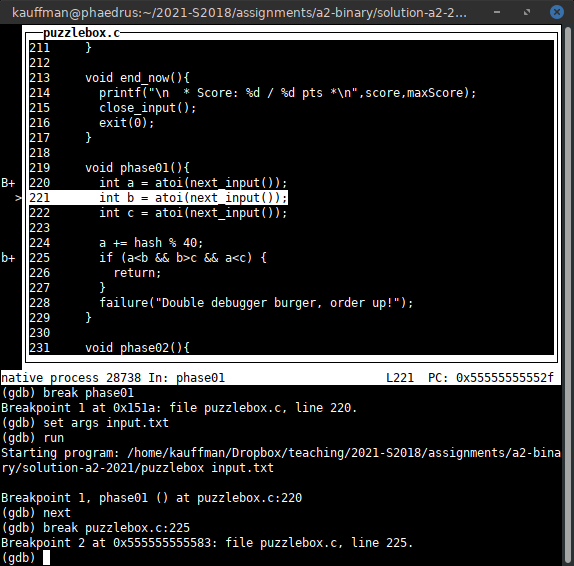
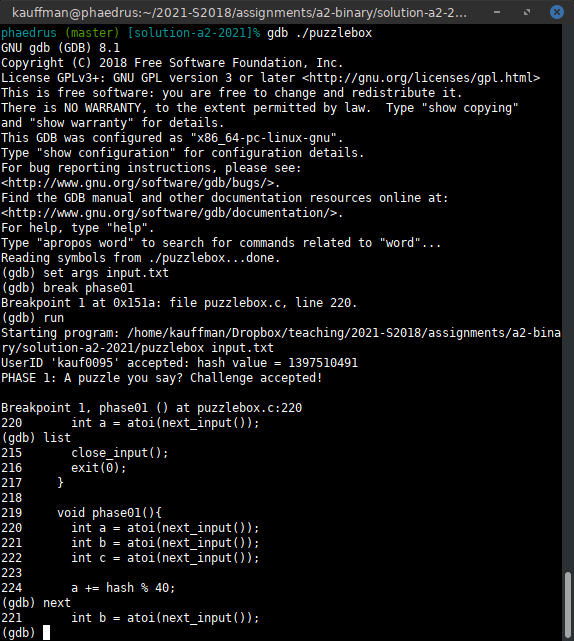
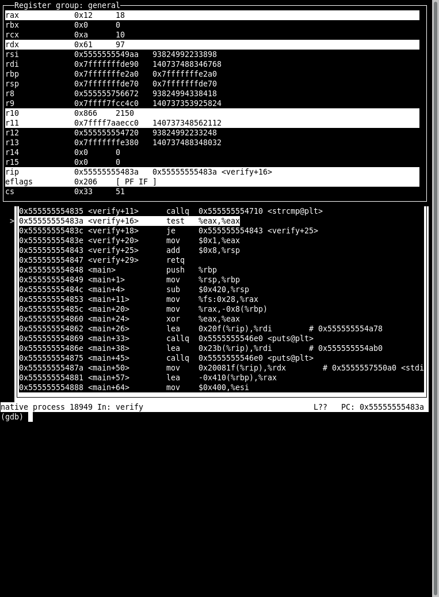

Quick Guide to gdb: The GNU Debugger
Intended Audience
This tutorial is for folks in courses like the UMN's CSCI 2021 or UMD's CMSC 216 which require use of GDB to work programs and perform debugging exercises like Bryant and O'Hallarons notorious "Binary Bomb" project. Others may benefit from the guide as well if they are looking to get oriented using GDB.
1 Starting the Debugger
In a terminal, run gdb with a "text user interface"
>> make puzzlebox gcc -Wall -g -c puzzlebox.c gcc -Wall -g -o puzzlebox puzzlebox.o # Note the -g option while compiling which adds debugging symbols for # the debugger: very useful # Start gdb with the text user interface on program puzzlebox >> gdb -tui ./puzzlebox
1.1 TUI Mode (recommended)
The Text User Interface (TUI) is enabled by running gdb with the -tui option. It shows
- Commands and history towards the bottom
- Source code position towards the top
The screen will occasionally get "messed up" which can be corrected by
pressing Control-L which will force a redraw of the terminal screen.

Figure 1: gdb -tui ./puzzlebox, the text user interface mode
1.2 Normal Mode
This is in contrast to the normal mode of gdb which does not show
any source code unless the list command is issued. Most folks find
this harder to work with unless they are running it as a sub-process
of another editor such as emacs.

Figure 2: gdb ./puzzlebox, the normal "quiet" mode. Source code is only shown after list commands.
1.3 Switching Modes
If in normal mode, one can enter TUI mode with the command
tui enable
Switching to normal mode is done via
tui disable
2 A Typical Start to puzzlebox
The below sample run in gdb illustrates the basics of running
puzzlebox in the debugger. See the next section for some details on
commands like next / run / break.
>> gdb -tui ./puzzlebox # Start gdb with text user interface on the puzzlebox
GNU gdb (GDB) 8.1
...
Reading symbols from ./puzzlebox...done.
(gdb) set args input.txt # set command line arguments to the input.txt
(gdb) run # run the program
Starting program: puzzlebox input.txt
UserID 'kauf0095' accepted: hash value = 1397510491 # program output
PHASE 1: A puzzle you say? Challenge accepted!
Ah ah ah, you didnt say the magic word...
Failure: Double debugger burger, order up!
* Score: 0 / 50 pts *
[Inferior 1 (process 27727) exited normally] # gdb indicates program ended
(gdb) break phase01 # set a breakpoint to stop at function phase01()
Breakpoint 1 at 0x55555555551a: file puzzlebox.c, line 220.
(gdb) run
Starting program: puzzlebox input.txt
UserID 'kauf0095' accepted: hash value = 1397510491
PHASE 1: A puzzle you say? Challenge accepted!
Breakpoint 1, phase01 () at puzzlebox.c:220 # hit a breakpoint
220 int a = atoi(next_input()); # stopped at this line of code
(gdb) step # step forward one line of code
next_input () at puzzlebox.c:197 # stepped into function next_input()
197 input_idx++;
(gdb) step # step again
198 int ret = fscanf(input_fh, "%s", inputs[input_idx]);
(gdb) finish # boring: finish this function
Run till exit from #0 next_input () at puzzlebox.c:198
0x0000555555555524 in phase01 () at puzzlebox.c:220
220 int a = atoi(next_input()); # back in phase01()
Value returned is $1 = 0x555555758380 <inputs+128> "1"
(gdb) step # forward
221 int b = atoi(next_input());
(gdb) next # move past the call to next_input()
222 int c = atoi(next_input());
(gdb) next # past again: 3 inputs required for this phase
224 a += hash % 40; # doing something to a based on random hash...
(gdb) print a # show what happened to it
$2 = 12 # now has value 12
(gdb) n # abbreviation for 'next'
225 if (a<b && b>c && a<c) { # some checks for a, b, c which are inputs
(gdb) next
228 failure("Double debugger burger, order up!"); # about to fail, must need different inputs
(gdb) kill # kill the program
Kill the program being debugged? (y or n) y
# Edit intput.txt to have different values now
(gdb) run # re-run the program
Starting program: puzzlebox input.txt
UserID 'kauf0095' accepted: hash value = 1397510491
PHASE 1: A puzzle you say? Challenge accepted!
Breakpoint 1, phase01 () at puzzlebox.c:220 # hit breakpoint again
220 int a = atoi(next_input());
(gdb) info break # show info about which breakpoints are active
Num Type Disp Enb Address What
1 breakpoint keep y 0x000055555555551a in phase01 at puzzlebox.c:220
breakpoint already hit 1 time
(gdb) break puzzlebox.c:225 # don't feel like stepping: set a breakpoint some lines ahead
Breakpoint 2 at 0x555555555583: file puzzlebox.c, line 225.
(gdb) info break # show info on active brekpoints
Num Type Disp Enb Address What
1 breakpoint keep y 0x000055555555551a in phase01 at puzzlebox.c:220
breakpoint already hit 1 time
2 breakpoint keep y 0x0000555555555583 in phase01 at puzzlebox.c:225
(gdb) continue # continue executing until next breakpoint
Continuing.
Breakpoint 2, phase01 () at puzzlebox.c:225 # hit second breakpoint
225 if (a<b && b>c && a<c) {
(gdb) print a # a value
$3 = 21
(gdb) next # see if this works
228 failure("Double debugger burger, order up!"); # nope
(gdb) print b # see b
$4 = 2 # probably need to make it bigger to satisfy a<b
3 Standard gdb Commands
Like most debuggers, gdb gives a variety of ways to control program
execution and inspect values. Below is a summary but the extensive
help within gdb itself gives many more details.
3.1 GDB's Help System
GDB has an extensive built-in help accessible via help COMMAND which
will print information on the commands. Below is a demo of getting
help on several common commands:
(gdb) help x Examine memory: x/FMT ADDRESS. ADDRESS is an expression for the memory address to examine. FMT is a repeat count followed by a format letter and a size letter. Format letters are o(octal), x(hex), d(decimal), u(unsigned decimal), t(binary), f(float), a(address), i(instruction), c(char), s(string) and z(hex, zero padded on the left). Size letters are b(byte), h(halfword), w(word), g(giant, 8 bytes). The specified number of objects of the specified size are printed according to the format. If a negative number is specified, memory is examined backward from the address. Defaults for format and size letters are those previously used. Default count is 1. Default address is following last thing printed with this command or "print". (gdb) help step step, s Step program until it reaches a different source line. Usage: step [N] Argument N means step N times (or till program stops for another reason).
3.2 Setting breakpoints in gdb
A breakpoint indicates a place that execution will be stopped in a program by the debugger. They can be created in a variety of ways and removed when no longer needed.
| Command | Effect | Notes |
|---|---|---|
break main |
Stop running at the beginning of main() |
|
break phase01 |
Stop running at the beginning of | |
break puzzlebox.c:100 |
Stop running at line 100 of puzzlebox.c |
|
break |
Stop running at the current line | Useful for stopping on a re-run |
info breakpoint |
Show all breakpoints with locations | |
disable 2 |
Don't stop at breakpoint #2 but keep it there | |
enable 2 |
Stop at breakpoint #2 again | |
clear phase01 |
Remove breakpoint for phase01() |
|
clear puzzlebox.c:100 |
Remove breakpoint at line 100 of puzzlebox.c |
|
delete 2 |
Remove breakpoint #2 | |
break *0x1248f2 |
Break at specific instruction address | See info in Binary Files Section |
break *func+24 |
Break at instruction with decimal offset from a label | |
break *func+0x18 |
Break at instruction with hex offset from a label |
3.3 Arguments and Running
After loading a program and setting a breakpoint or two, typically one runs it. Command line arguments are also often necessary.
| Command | Effect | Notes |
|---|---|---|
set args hi bye 2 |
Set command line arguments to hi bye 2 |
Want command line to be input.txt for puzzlebox |
show args |
Show the current command line arguments | Changes to args require a kill/run to take effect |
run |
Start running the program from the beginning | Will run to complete unless a breakpoint is set |
kill |
Kill the running program | Usually done to re- run the program before hitting a failure |
file program |
Load program and start debugging |
Reloads after a recompile, not necessary for puzzlebox but useful for proper debugging |
quit |
Exit the debugger |
3.4 Stepping
When a breakpoint is hit, single steps forward are possible in the
debugger to trace which path of execution is taken. Use step to move
into functions line by line and next to stay in the current function
stepping over function calls.
| Command | Effect | Notes |
|---|---|---|
step |
Step forward one line of code | Must be running; usually do this after hitting a breakpoint |
step 4 |
Step forward 4 lines of code | step goes into functions |
next / next 4 |
Step forward but over function calls | next does not go into functions |
stepi |
Step a single assembly instruction forward | stepi goes into functions |
nexti |
Step an assembly instruction forward over functions | nexti does not go into functions |
finish |
Finish executing the current function | Shows return value of function on finishing it |
continue / cont |
Continue running until the next breakpoint |
3.5 Printing Values in Memory and Stack
Inspecting values is often necessary to see what is going on in a program. The debugger can display data in a variety of formats including formats that defy the C type of the variable given.
Also included are commands to print memory locations pointed to by
registers such as the stack pointer register rsp. This is useful
for inspecting values that might be pushed into the stack and
manipulated.
| Command | Effect | Notes |
|---|---|---|
print a |
Print value of variable a which must be in the current function |
Formats a according to its C type |
print/x a |
Print value of a as a hexadecimal number |
|
print/o a |
Print value of a as a octal number |
|
print/t a |
Print value of a as a binary number (show all bits) |
|
print/s a |
Print value of a as a string even if it is not one |
|
print arr[2] |
Print value of arr[2] according to its C type |
|
print 0x4A25 |
Print decimal value of hex constant 0x4A25 which is 18981 |
|
x a |
Examines memory pointed to by a |
Assumes a is a pointer |
x/d a |
Print memory pointed to by a as a decimal integer |
|
x/s a |
Print memory pointed to by a as a string |
|
x/s (a+4) |
Print memory pointed to by a+4 as a string |
|
x $rax |
Print memory pointed to by register rax |
|
x $rax+8 |
Print memory 8 bytes above where register rax points |
|
x /wx $rax |
Print as "words" of 32-bit numbers in hexadecimal format | |
x /gx $rax |
Print as "giant" 64-bit numbers in hexadecimal format | |
x /5gd $rax |
Print 5 64-bit numbers starting where rax points; use decimal format |
|
x /3wd $rsp |
Print 3 32-bit numbers at the top of the stack (starting at rsp) |
|
x /3bd $rsp |
Print 3 8-bit numbers at the top of the stack (starting at rsp) |
3.6 Command History and Screen Management in TUI Mode
A bit of basic editing discipline is useful in gdb. The Text User
Interface -tui mode alter keys so that arrows don't work
normally. However, TUI mode shows the source code position in the
upper area of the terminal which most folks find to be helpful.
| Command/Keystroke | TUI -tui mode |
Normal Mode |
|---|---|---|
Ctrl-l (control L) |
Re-draw the screen to remove cruft (do this a LOT) | Clear the screen |
Ctrl-p (control P) |
Previous command, repeat for history | Same |
Ctrl-n (control N) |
Next command if at a previous | Same |
Ctrl-r (control R) |
Interactive search backwards | Same |
Ctrl-b (control B) |
Move the cursor back (left) a char | Same |
Ctrl-f (control F) |
Move the cursor forward (right) a char | Same |
| Up / Down arrows | Move the source code window up/down | Previous/Next Commands |
| Left / Right arrows | Move the source code window left/right | Move cursor left/right |
list |
No effect, source code always shown in top panel | Show 10 lines of source code around current execution point |
3.7 Other Resources
- A long listing of
gdbcommands: https://ccrma.stanford.edu/~jos/stkintro/Useful_commands_gdb.html - Some preface material on commands: https://www.cs.rochester.edu/~nelson/courses/csc_173/review/gdb.html
4 Debugging Assembly in GDB
4.1 Overview
GDB has no trouble handling assembly code when it is included or when only a binary executable is available. The following commands are useful for this.
| Command/Keystroke | TUI -tui mode |
Normal Mode |
|---|---|---|
Ctrl-l (control L) |
Re-draw the screen to remove cruft (do this a LOT) | Clear the screen |
layout asm |
Show assembly code window if not currently shown | No effect |
layout reg |
Show a window holding register contents | No effect |
winheight regs +2 |
Make the registers window 2 lines bigger | No effect |
winheight regs -1 |
Make the registers window 1 line smaller | No effect |
info reg |
Show the contents of registers in the command window | Same |
list |
No effect | Show some lines of assembly code |
disassemble OR disas |
No effect | Show lines of assembly in binary, includes instruction addresses |
In TUI mode with the commands layout asm and layout reg, one can
get a somewhat ergonomic layout for debugging assembly which looks
like this.

Figure 3: gdb running on some assembly code. Register contents are displayed in the top frame, assembly in the middle, and commands on the bottom.
4.2 Compile and Run Assembly Files (source available)
Compiling an assembly file with debug flags on will cause gdb to show
that assembly code by default in the TUI source window and cause the
step command to move one instruction at a time.
>> gcc -g collatz.s # compile assembly code with debug symbols >> gdb ./a.out # run gdb on executable (gdb) tui enable # enable text user interface mode (gdb) break main # set a break point at main (gdb) run # run to the break point (gdb) step # step a couple times to see position in assembly (gdb) s # shorthand for step (gdb) layout regs # start displaying registers (gdb) step # step to see changes in registers (gdb) break collatz.s:15 # break at another source line (gdb) continue # run to the source line (gdb) step # step (gdb) winheight regs +2 # show more of the register window for eflags (gdb) quit # exit the debugger
4.3 Debug Binaries (no source available)
Without debug symbols, gdb does not know what source to
display. Since binary files correspond to assembly, one can always
get the debugger to show assembly code in TUI with layout asm.
Also, the stepi command should be used to execute single assembly
instructions at a time as step may try to figure out C-level
operation to execute which may be several assembly instructions.
>> gcc collatz.s # compile assembly code without debug symbols >> gdb ./a.out # run gdb on executable (gdb) tui enable # enable text user interface mode (gdb) layout asm # SHOW ASSEMBLY CODE IN SOURCE WINDOW (gdb) break main # set a break point at main (gdb) run # run to the break point (gdb) stepi # STEP A SINGLE ASSMEBLY INSTRUCTION (gdb) si # shorthand for stepi (gdb) layout regs # start displaying registers (gdb) stepi # step to see changes in registers (gdb) break *main + 14 # break at instruction 14 bytes after main (gdb) continue # run to the source line (gdb) stepi # step (gdb) winheight regs +2 # show more of the register window for eflags (gdb) quit # exit the debugger
4.4 Additional TUI Commands
The official list of gdb TUI commands and configuration is here:
https://sourceware.org/gdb/current/onlinedocs/gdb/TUI.html
Included in the documentation are
- Adjusting window heights
- Displaying additional windows
- Cycling through windows for scrolling with up/down arrows
- Single-key mode so that pressing
iorssteps one instruction forward which makes one feel very cool
5 Breakpoints in Binary Files
Setting breakpoints with C and Assembly source files is easily done by file/line number. However, if no source is available, it becomes a bit trickier as one must set breakpoints base on other criteria. Here are some tricks.
5.1 Break at Function Symbols/Labels
At the assembly level, function names at higher language levels are
still present as "symbols". These can be viewed using binary tools
like objdump -t a.out or nm a.out. Anything marked with the T
symbol are "program text". Setting break points at these is common.
>> nm bomb # show symbols in binary bomb
... # functions marked with "T"
0000000000400df6 T main # there is a main function
...
0000000000400f2d T phase_1 # there are phase functions
0000000000400f49 T phase_2
...
>> gdb ./bomb # run binary in debugger
...
Reading symbols from bomb...done.
(gdb) break main # set a breakpoint on reaching symbol "main"
Breakpoint 1 at 0x400df6: file bomb.c, line 37.
(gdb) break phase_1 # set a breakpoint on reaching symbol "phase_1"
Breakpoint 2 at 0x400f2d # shows memory address of instruction starting phase_1
(gdb) run # run
Starting program: bomb
Breakpoint 1, main (argc=1, argv=0x7fffffffe6a8) at bomb.c:37 # first breakpoint in main
37 {
(gdb) cont # continue
Continuing.
...
Breakpoint 2, 0x0000000000400f2d in phase_1 () # second breakpoint in phase_1, note memory address
(gdb)
5.2 Break at Specific Instruction Addresses
As binaries don't have line numbers, one cannot set a breakpoint at a
specific line number. However, all instructions in a binary file do
have an instruction address. One can set a breakpoints at specific
instruction addresses so that when the instruction pointer register
(rip) reaches these, the debugger will stop execution. The syntax
for this is a little funny:
# note the use of the * in each case (gdb) break *0x1248f2 # break at instruction at address 0x1248f2 (gdb) break *func+24 # break at label func + 24 bytes (gdb) break *func+0x18 # break at label func + 24 bytes (0x18 == 24)
Below is an example showing typical uses of setting breakpoints at
instruction addresses. Note that the disas command is used in gdb
to show disassembled code in the current function which conveniently
provides some offsets for upcoming instruction addresses from the
closest label. This information may already be present in TUI mode
without need to use disas.
Breakpoint 2, 0x0000000000400f2d in phase_1 () (gdb) disas # SHOW assembly code and current position Dump of assembler code for function phase_1: => 0x0000000000400f2d <+0>: sub $0x8,%rsp 0x0000000000400f31 <+4>: mov $0x402710,%esi 0x0000000000400f36 <+9>: callq 0x401439 <strings_not_equal> 0x0000000000400f3b <+14>: test %eax,%eax 0x0000000000400f3d <+16>: je 0x400f44 <phase_1+23> 0x0000000000400f3f <+18>: callq 0x401762 <explode_bomb> 0x0000000000400f44 <+23>: add $0x8,%rsp 0x0000000000400f48 <+27>: retq End of assembler dump. (gdb) break *0x400f36 # SET a breakpoint at specific instruction address Breakpoint 3 at 0x400f36 (gdb) cont # CONTINUE execution Continuing. Breakpoint 3, 0x0000000000400f36 in phase_1 () # note stopping address matches breakpoint (gdb) disas # SHOW assembly code and current position Dump of assembler code for function phase_1: 0x0000000000400f2d <+0>: sub $0x8,%rsp 0x0000000000400f31 <+4>: mov $0x402710,%esi => 0x0000000000400f36 <+9>: callq 0x401439 <strings_not_equal> 0x0000000000400f3b <+14>: test %eax,%eax 0x0000000000400f3d <+16>: je 0x400f44 <phase_1+23> 0x0000000000400f3f <+18>: callq 0x401762 <explode_bomb> 0x0000000000400f44 <+23>: add $0x8,%rsp 0x0000000000400f48 <+27>: retq End of assembler dump. (gdb) break *phase_1+18 # SET a breakpoint at byte offset from label Breakpoint 4 at 0x400f3f # Note address (gdb) cont # CONTINUE execution Continuing. Breakpoint 4, 0x0000000000400f3f in phase_1 () # note address (gdb) disas # SHOW assembly code and current position Dump of assembler code for function phase_1: 0x0000000000400f2d <+0>: sub $0x8,%rsp 0x0000000000400f31 <+4>: mov $0x402710,%esi 0x0000000000400f36 <+9>: callq 0x401439 <strings_not_equal> 0x0000000000400f3b <+14>: test %eax,%eax 0x0000000000400f3d <+16>: je 0x400f44 <phase_1+23> => 0x0000000000400f3f <+18>: callq 0x401762 <explode_bomb> 0x0000000000400f44 <+23>: add $0x8,%rsp 0x0000000000400f48 <+27>: retq End of assembler dump.
6 Other GDB Guides
- Beej's Quick Guide to GDB: Beej's guides are accurate, short, and usually funny
- Official GDB Manual: Long and thorough, go here if you need more information
7 Other Useful Tools for working with Binary Files
The following programs are available on most Unix systems and can prove useful when dealing with binary files. In addition to GDB, they can provide some information on what to look for.
| Command | Effect |
|---|---|
objdump -d file.o |
Show decompiled assembly from compiled file |
objdump -t file.o |
Show the symbols (functions/global vars) defined in the file |
nm file.o |
Short for "names", Similar to objdump -t but omits some details of symbols |
strings file.o |
Find and show ASCII strings that are present in the file |
8 CHANGELOG
- Mon Feb 17 04:50:20 PM EST 2025
- Style adjustments to UMD flavor in preparation for re-deployment and updates.
- Tue Oct 18 01:08:26 PM CDT 2022
- Minor typo fixes and additions.
- Fri Jan 11 17:08:41 CST 2019
- Minor typo fixes and additions.
- Tue Feb 27 10:56:51 CST 2018
- Added a section on setting breakpoints in binary files which is relevant to work on the binary bomb assignment.
- Wed Feb 21 15:19:21 CST 2018
- Added a section on debugging
binaries/assembly with
gdbincluding debugging binaries without source code.